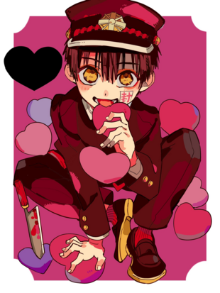
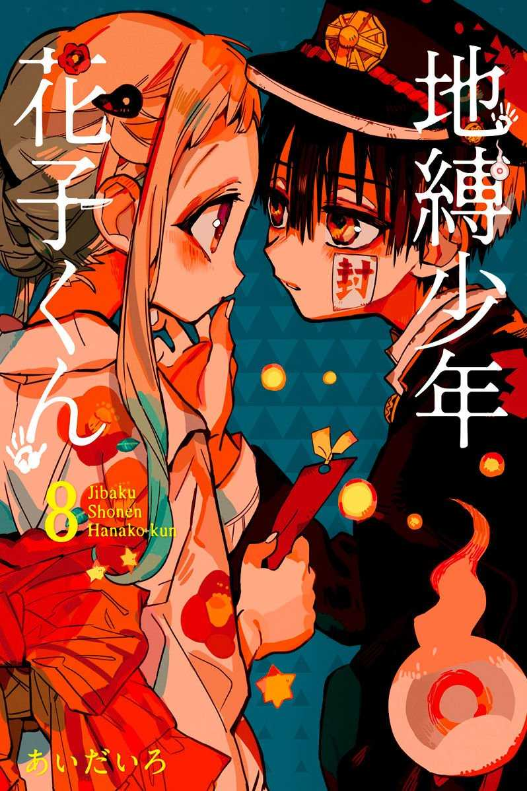
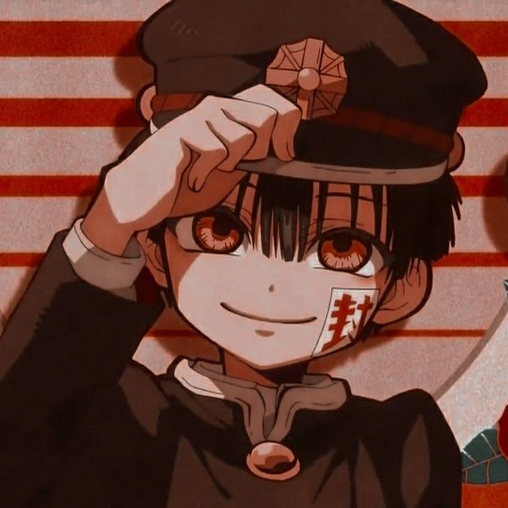

Hanako-kun
Hanako, Cujo nome verdadeiro é Yugi Amane, é um fantasma que assombra o antigo prédio da Academia Kamome. Ele mora no banheiro feminino do terceiro andar, no banheiro da terceira cabine. Hanako governa os Sete Mistérios da escola sendo ele o Número 7. 
Ele é o irmão gêmeo mais velho de Yugi Tsukasa (Hanako atende desejos aos vivos estudantes da escola, Já Tsukasa atende desejos dos mortos da escola, pessoas que morreram ali na escola Kamome). Como humano e estudante, frequentou a Kamome Academy. Yugi Amane nasceu no dia 25 de novembro de 1956, morreu com 13-14 anos, de acordo com o mangá pelos os anos que ele é um fantasma é para ele ter 62 anos, porém aparentemente seu corpo e sua mente continuam de 14 anos.
Hanako é um menino baixo, medindo cerca de 150 cm de altura, com cabelo castanho escuro despenteado e grandes íris âmbar em formato de lua crescente. Hanako veste o velho uniforme masculino Kamome Gakuen, um gakuran preto com botões dourados e bainhas vermelhas, uma camisa branca de mangas compridas do oeste por baixo, sapatos pretos e meias vermelhas.
Também usa um chapéu preto com uma parte inferior branca, um emblema dourado e cordões vermelhos ao longo da costura frontal para combinar com seu uniforme. Hanako é freqüentemente visto com e comanda dois hakujoudai - almas humanas desencarnadas - com marcações circulares vermelhas e verdes, respectivamente.
Yugi Amane mantém o equilíbrio na relação entre os humanos e os sobrenaturais da escola, e é freqüentemente visto ajudando outras pessoas ao redor. Hanako é alegre, infantil e gosta de se divertir. Como o garoto é bastante travesso, ele gosta bastante de provocar os outros e, embora também se perturbe facilmente.
Apesar de sua personalidade infantil, Yako(o mistério 2 da escola) e Tsuchigomori ( o mistério 5), o respeitam e seguem suas ordens como colegas de escola. Ele pode ficar muito sério às vezes, mas outras vezes parece muito irreverente.
Hanako também é um pouco sádico às vezes,como mostrado no anime ele freqüentemente ameaça os outros com sua faca de cozinha. Yashiro Nene o descreve como "difícil de entender".
